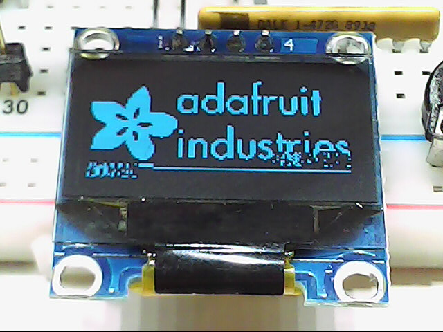

Mini_SSD1306
This is a library for monochrome OLEDs based on SSD1306 drivers.
This library is a stripped-down version of the original Adafruit_SSD1306 library v1.1.2. This version of the library does not depend on the Adafruit_GFX library and has a much smaller memory footprint than the full version, but most of the graphical features are missing.
The Library only supports I2C communication.
API
SSD1306(instancename, pin_reset);
void Mini_SSD1306_begin(uint8_t switchvcc, uint8_t i2caddr, bool reset);
void Mini_SSD1306_clearDisplay(void);
void Mini_SSD1306_invertDisplay(uint8_t i);
void Mini_SSD1306_display();
void Mini_SSD1306_startscrollright(uint8_t start, uint8_t stop);
void Mini_SSD1306_startscrollleft(uint8_t start, uint8_t stop);
void Mini_SSD1306_startscrolldiagright(uint8_t start, uint8_t stop);
void Mini_SSD1306_startscrolldiagleft(uint8_t start, uint8_t stop);
void Mini_SSD1306_stopscroll(void);
void Mini_SSD1306_dim(boolean dim);
void Mini_SSD1306_drawPixel(int16_t x, int16_t y, uint8_t color);
Example
The library initializes the display buffer with the Adafruit splash screen.
Since it is not modified, oled_display() shows it. The loop draws a
pattern of blinking pixels in an 8x8 grid:
#include "I2C.h"
#include "Mini_SSD1306.h"
Mini_SSD1306(oled,-1); // -1 means no reset pin
#if (SSD1306_LCDHEIGHT != 64)
#error("Height incorrect, please fix Mini_SSD1306.h!");
#endif
void setup()
{
// Initialize with the I2C addr 0x3C. Some displays use 0x3D instead.
oled_begin(SSD1306_SWITCHCAPVCC, 0x3C,0);
}
void loop()
{
uint8_t x,y;
oled_display(); // show the display buffer
delay (1000);
// draw some dots in an 8x8 pattern
for (x=0; x<WIDTH; x+=8)
{
for (y=0; y<HEIGHT-8; y+=8) // don't alter the stack!
{
oled_drawPixel(x,y,INVERSE);
}
}
}
Hardware requirements
These tiny displays communicate usually via I2C, but SPI versions do exist. My display uses the I2C address 0x3C, but there are similar displays out there configured to use the address 0x3D.
The display content has to be kept in memory as it is not possible to read the memory content of the physical display. For 128x64 pixel this requires 1kB of RAM. For low-memory devices like the STM8S103 it means the display buffer overlaps with the stack. Notice the chaotic pattern in the lower part of the screen:

Technical data:
- Driver chip SSD1306
- Display resolution: 128x64
- Power: 3.3V, approx. 20mA (5V possible)
- Interface: I2C, some modules support SPI as well
- I2C-Address: 0x3c, configurable to 0x3d by setting a solder bridge (on some modules)
Pin out of an I2C module:
| Pin | Function | STM8S103 pin | sduino pin |
|---|---|---|---|
| 1 | GND | ||
| 2 | Vcc | ||
| 3 | SCL | PB4 | PIN_WIRE_SCL, SCL, 4 |
| 4 | SDA | PB5 | PIN_WIRE_SDA, SDA, 3 |
Further reading
Technical information:
Other libraries:
Possible improvements
Faster I2C transfer
Faster I2C transfer is supported by the I2C library, but to use it you have to modify the source code for the Mini_SSD1306 library. Make this configurable in the instantiation function.